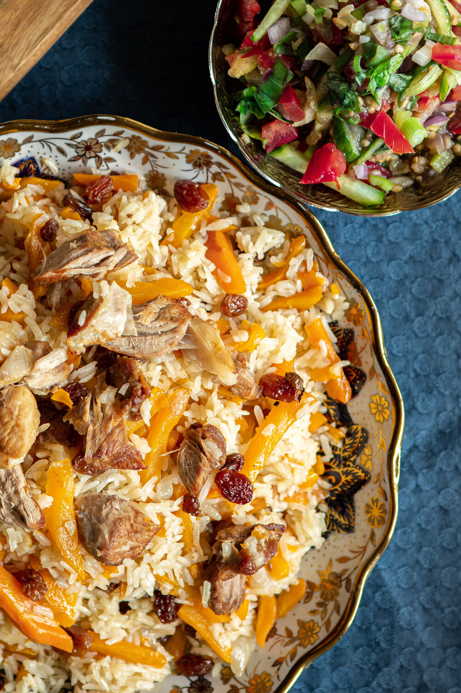

How To Make Uyghur Polo (داستىخان شاھى- پولو)
Introduction

Polo is a traditional Uyghur rice dish,
it’s one of the most famous halal Muslim street foods in Central Asia,
which we consider to be “King of the Uyghur Table.”
Ingredients
- lamb 300g
- canola oil 160ml
- red onion 1x
- carrots 8x
- raisins 60g
- rice 500g
- cold water 1.4l
- seasonings: salt, cumin, and sugar to taste
Steps
- Cut the lamb roughly in 5-6 big sections.
Cut the onion in half and slice them into half rings.
Julienne the carrots.
- Rinse the rice to remove the surface starch that
otherwise causes the rice to clump together.
Let the rice soak in clear water for a bit. Set aside.
- Add the oil to the pan over high heat,
when the oil is hot, add the meat and brown them up on all sides.
- Add in the onions, cumin, salt, carrots, and sugar.
Mix all the ingredients carefully and gently. Let it cook (about 8-10 min.)
- Dry the rice. Bring the rice into the pan and
spread the rice evenly out on top of the rest of the ingredients.
- Cover and keep it at a low simmer for about 35 min.
Then, mix all the ingredients gently from the bottom of the pan.